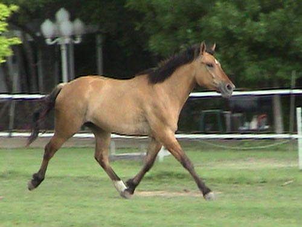
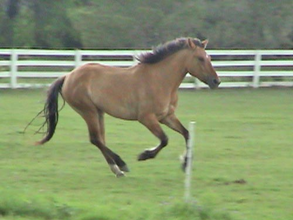
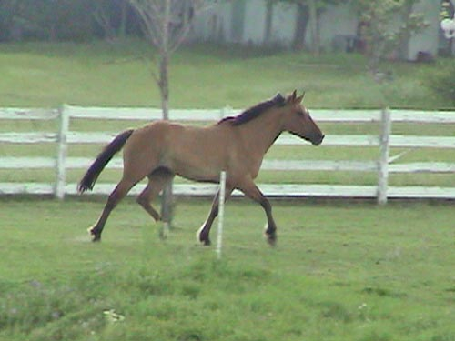
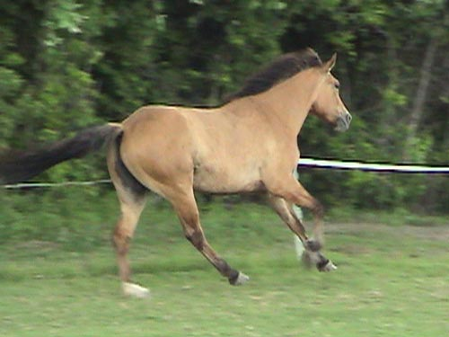

Skye in the pasture
These are from video we
took of Skye when we worked her loose in the pasture.
She's not as lazy as some
of my other guys. I think she enjoyed the
attention we were giving
her.

Trotting out a bit.

Here she'd just done a flying change
to the right. She's very comfortable with doing them on the straight-away
when she's preparing to do a turn.

We've been working on the lunge in
side reins.
She handles them just fine, but is a bit
more cautious about forward as she finds her balance while starting to
give to the bit.

I try to keep the cantering on the
lunge to a minimum. I'm also sure to give her quite a large circle to make
it easier on her.